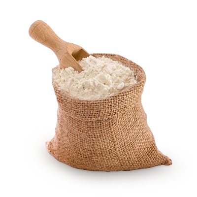

Sourdough Bread
This classic sourdough bread is made with a natural starter, resulting in a deep, tangy flavor and a perfectly chewy crust. With a long fermentation process, this bread develops complex flavors and a light, airy crumb.

500g (4 cups) bread flour
350g (1½ cups) water

10g (2 tsp) salt
100g (½ cup) active sourdough starter

- In a large bowl, mix the flour and water until fully incorporated. Let it rest for 30 minutes (autolyse).
- Add the sourdough starter and salt, then mix until a sticky dough forms.
- Cover and let the dough rest for 30 minutes.
- Perform a series of four stretch-and-folds every 30 minutes over 2 hours.
- Cover and allow the dough to bulk ferment at room temperature for 4-6 hours until doubled in size.
- Lightly flour a surface, shape the dough into a round ball, and place it into a floured banneton (proofing basket) or bowl.
- Cover and refrigerate overnight for cold fermentation.
- Preheat the oven to 475°F (245°C) with a Dutch oven inside.
- Carefully place the dough onto parchment paper, score the top with a blade, and transfer it into the hot Dutch oven.
- Bake covered for 20 minutes, then uncover and bake for another 20-25 minutes until golden brown.
- Let the bread cool on a wire rack before slicing.